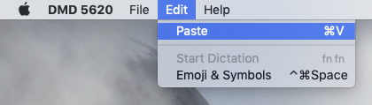

The Edit menu currently has only one function: Pasting text.
You can paste text from the Macintosh system clipboard into the terminal at the current cursor point by selecting the Paste menu item from the Edit menu, or by pressing Command-V on the keyboard.